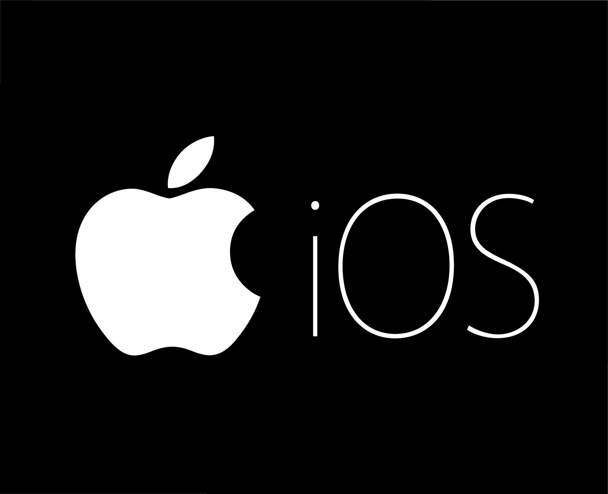

Apple
A Apple foi fundada em 1 de abril de 1976 por Steve Wozniak, Steve Jobs e Ronald Wayne com o nome de Apple
Computers INC., na Califórnia. O nome foi escolhido por Jobs após a visita do pomar de maçãs da fazenda de
Robert Friedland, também pelo fato do nome soar bem e ficar antes da Atari nas listas telefônicas.
Apple Inc. é uma empresa multinacional norte-americana que tem o objetivo de projetar e comercializar produtos
eletrônicos de consumo, software de computador e computadores pessoais.
